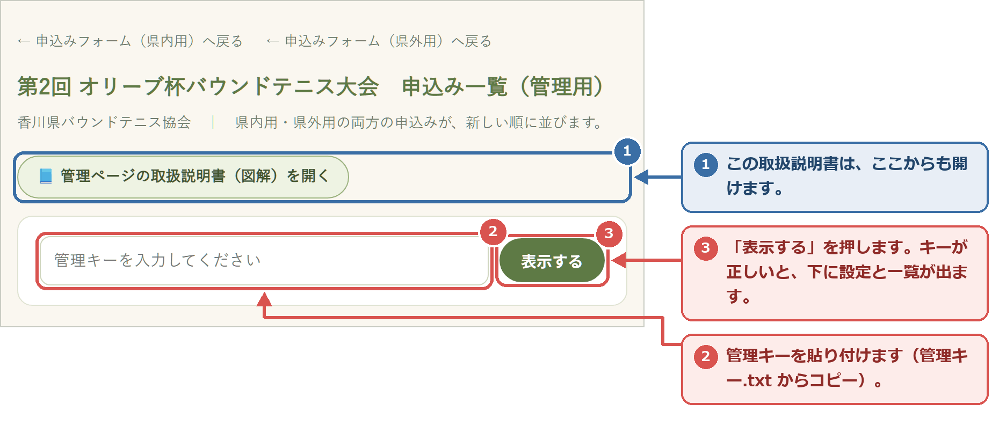
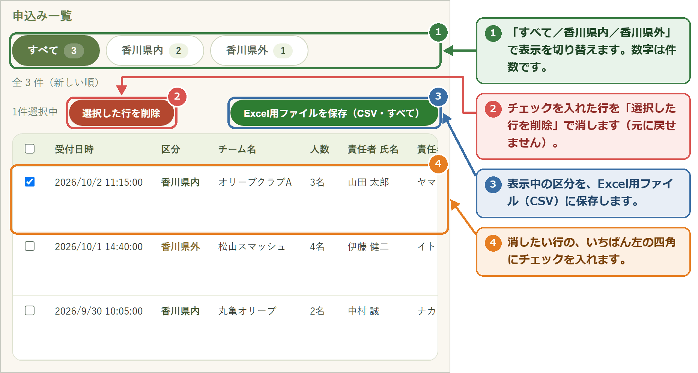
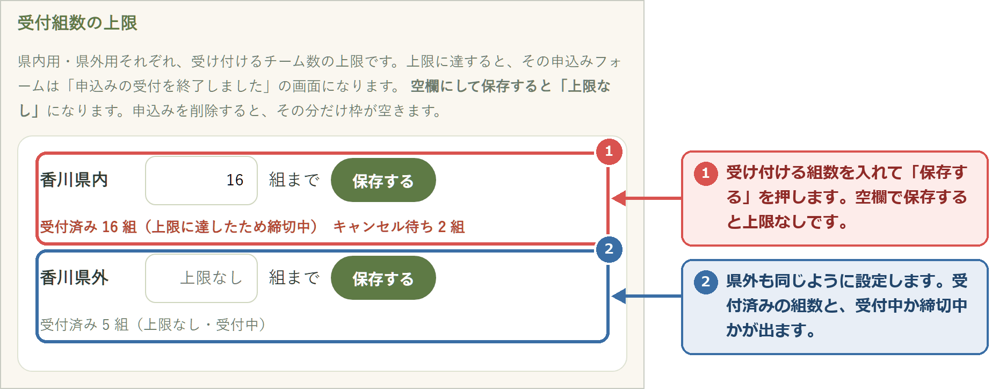
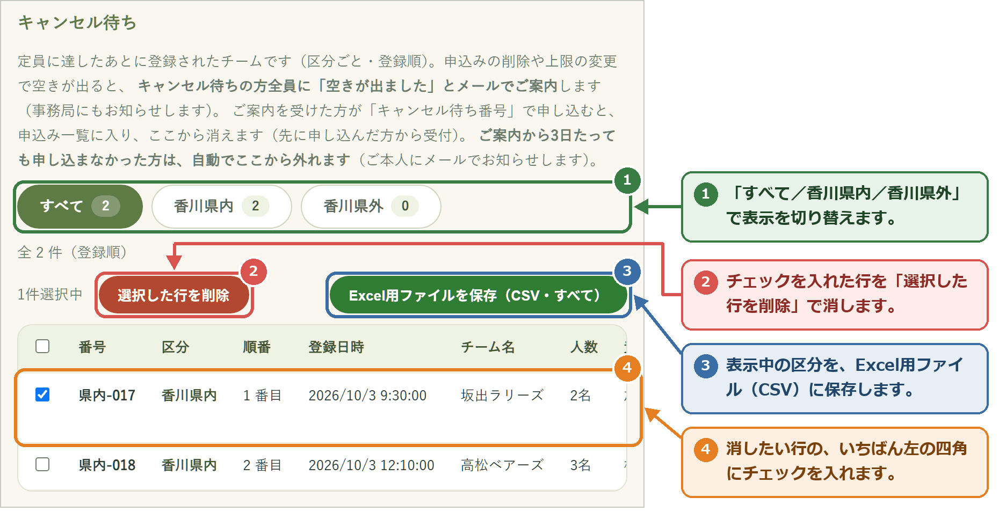
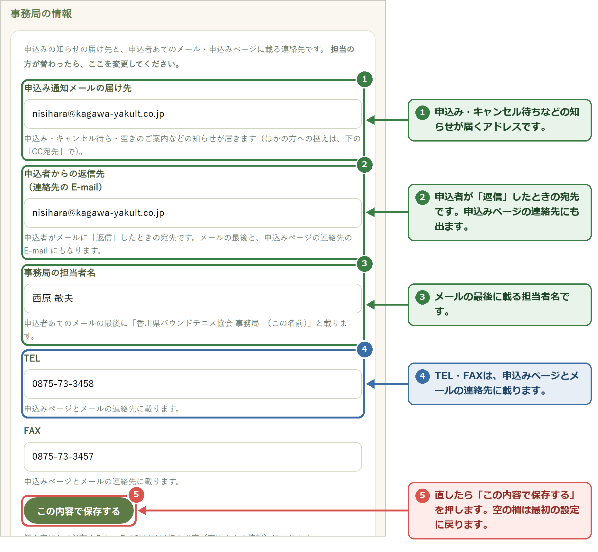
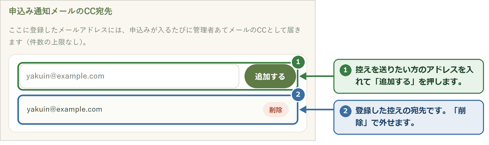
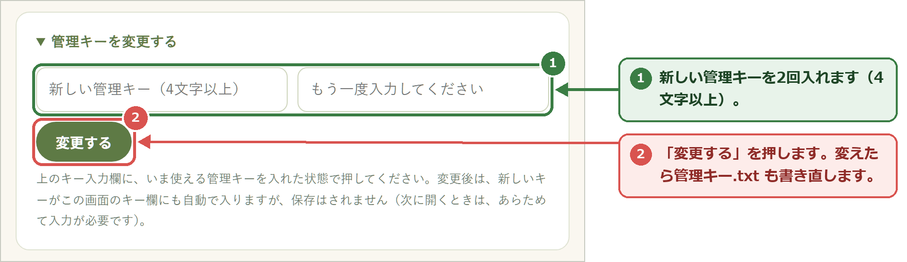

OLIVE CUP 2026 協会（管理者）向け
第2回 オリーブ杯バウンドテニス大会
第2回 オリーブ杯バウンドテニス大会
申込み 管理ページ取扱説明書（図解）
申込みの一覧を見る・Excel用に保存する・受付の上限やキャンセル待ちを扱うための説明書です。
パソコンに何かを新しく入れる必要はありません。いつものインターネット（Edge か Chrome）で使えます。
1このフォルダに入っているもの
| はじめにお読みください_管理ページ取扱説明書.pdf | この説明書です。 |
|---|---|
| 申込者向け_申込みのしかた.pdf | 申込者（各クラブの申込責任者）向けの説明書です。大会のご案内と一緒に、メールやLINEで送ったり、印刷して配ったりできます。 |
| ショートカットをデスクトップに置く.bat | ダブルクリックすると、デスクトップにページの入口（ショートカット）が3つできます。最初に1回だけ使います。 |
| デスクトップに置くもの（フォルダ） | 上の3つのショートカットの本体です。 |
| 管理キー.txt | 管理ページを開くための「合いことば」です。協会の役員以外には教えないでください。 |
| 大切な情報まとめ.txt | ページのアドレス、届くメール、しくみの情報です。 |
| 香川県内用の申込みページ | https://royschannel.com/olive2-kennai |
|---|---|
| 香川県外用の申込みページ | https://royschannel.com/olive2-kengai |
| 申込みのしかた（申込者向け） | https://royschannel.com/olive2-howto |
| 管理ページ（協会用） | https://royschannel.com/olive2-admin |
申込者にお知らせするのは、申込みページ（県内用・県外用）と「申込みのしかた」だけです。管理ページのアドレスと管理キーは、お知らせしないでください。
2しくみ（全体の流れ）と、届くメール
申込者スマホ・パソコン
→
申込みページ県内用・県外用
定員のときは
キャンセル待ち番号を発行
キャンセル待ち番号を発行
→
事務局に知らせのメール「事務局の情報」の届け先へ（CCで控えも）
申込者に受付のメールE-mail を入れた方だけ
管理ページの一覧に保存一覧・Excel用保存・削除・設定
事務局に届くメールの種類（件名の頭）
| 【第2回オリーブ杯 申込み】 | ふつうの申込みが届いた。参加の可否のお返事をお願いします。 |
|---|---|
| 【第2回オリーブ杯 キャンセル待ち登録】 | 定員のあとに、キャンセル待ちの登録があった（まだ申込みではありません）。 |
| 【第2回オリーブ杯 空きの案内】 | 空きが出たので、キャンセル待ちの方全員に「空きが出ました」のメールを送った。 |
| 【第2回オリーブ杯 キャンセル待ちから申込み】 | キャンセル待ちの方が、番号で申し込んだ。参加の可否のお返事をお願いします。 |
| 【第2回オリーブ杯 期限切れ】 | 空きのご案内から3日たっても申し込まなかった方を、キャンセル待ちから外した。 |
3はじめの準備（最初に1回だけ）
デスクトップに、3つのページの入口（ショートカット）を置きます。
- このフォルダの中の「ショートカットをデスクトップに置く.bat」をダブルクリックします。 黒い画面が出て「デスクトップに、ショートカットを3つ置きました。」と表示されます。何かキーを押すと閉じます。 青い画面で「Windows によって PC が保護されました」と出たら、「詳細情報」の文字を押し、下に出る「実行」を押してください。それでも出来ないときは、「デスクトップに置くもの」フォルダの中の3つのファイルを、マウスでデスクトップへ引っぱって放します。
- デスクトップに、次の3つがあることを確かめます。 「オリーブ杯 申込みフォーム（県内用）」「オリーブ杯 申込みフォーム（県外用）」「オリーブ杯 申込み一覧（管理ページ）」 見当たらないときは、デスクトップの何もない所で右クリック →「最新の情報に更新」を押してください。
4申込みが来たら
申込みがあるたびに、「事務局の情報」の申込み通知メールの届け先（はじめは西原さんのメール）に、次のようなメールが届きます。
差出人 第2回オリーブ杯 申込みフォーム <olive-uketsuke@royschannel.com>
件名 【第2回オリーブ杯 申込み】オリーブクラブA（山田 太郎 様／香川県内）
件名 【第2回オリーブ杯 申込み】オリーブクラブA（山田 太郎 様／香川県内）
第2回 オリーブ杯バウンドテニス大会（香川県内用）の参加申込みが届きました。 申込日 ： 2026年10月2日 締切 ： 2026年10月23日（金曜日） 【申込責任者】（フリガナ・氏名・郵便番号・住所・TEL・E-mail） 【申込チーム】（チーム名・申込み人数・チーム監督・選手 No.1〜） ※このメールにそのまま返信すると、申込責任者ご本人（山田 太郎 様）に届きます。 ※申込は先着順です。受付後、参加の可否のお返事をお願いします。
E-mail を入れた申込者には、自動で「受け付けました」のメールが届きます。その中で「参加の可否は、あらためてお電話・FAX・E-mail にてお返事いたします」とお伝えしています。E-mail の無い方には、お電話か FAX でお返事ください。
メールが見当たらないときは、迷惑メールのフォルダを見てください。入っていたら、会社のメールの担当の方に「olive-uketsuke@royschannel.com からのメールを受け取れるようにしてほしい」とお伝えください。メールが無くても、申込みは管理ページの一覧に残っています。
5管理ページを開く

- デスクトップの「オリーブ杯 申込み一覧（管理ページ）」をダブルクリックします。 図1の画面が開きます。はじめは、管理キーの欄と「表示する」だけが出ています。 別のページが開いたときは、画面いちばん上のアドレス欄に royschannel.com/olive2-admin と打って Enter を押します。
- 「管理キー.txt」を開き、キーの文字をなぞって選び、Ctrl を押しながら C（コピー）。
- 管理キーの欄を1回押してから、Ctrl を押しながら V（貼り付け）→「表示する」を押します。 キーが正しいと、その下に、設定の欄と申込み一覧が出ます。 「キーが正しくないか、取得に失敗しました。」と出たら、キーの前後に空白が入っていないか見て、もう一度コピーからやり直してください。
管理キーはパソコンに記憶されません。ページを開くたびに貼り付けてください。（キーを知らない人に中身を見られないようにするためです）
6申込み一覧を見る・保存する・消す

- 1行が1チームです。表が横に長いので、表の下のつまみを左右に動かすと続きが見えます。
- どの欄も、1行20文字で折り返して表示します。監督は、選手 No.1 のすぐ左の「チーム監督」の列で分かります。
- 「受付日時」は、申込みを受け付けた日時です。
Excel用ファイル（CSV）に保存する
- 保存したい区分（すべて／香川県内／香川県外）のボタンを押してから、「Excel用ファイルを保存」を押します。 保存する場所を選ぶ画面が出ます。ファイル名は「第2回オリーブ杯_申込み一覧_日付.csv」です。 保存する場所の画面が出ないときは、「ダウンロード」フォルダに保存されています。
- 「デスクトップ」など分かりやすい場所を選んで「保存」を押します。 「保存しました。」と出ます。そのファイルをダブルクリックすると Excel で開けます。
いらない申込みを消す（重複・取り消しなど）
- 消したい行の、いちばん左の四角を押してチェックを入れます（見出しの四角で、表示中の行をまとめて選べます）。 表の上に「1件選択中」と出て、「選択した行を削除」が押せるようになります。
- 「選択した行を削除」を押し、確認の画面で「OK」を押します。 その行が消えます。 消した申込みは元に戻せません。心配なときは、先に Excel用ファイルに保存しておいてください。
申込みを消して空きが出たとき、キャンセル待ちの方がいれば、全員に「空きが出ました」のメールが自動で届きます（8 キャンセル待ち）。
7受付組数の上限を決める

- 「香川県内」の欄に、受け付けるチーム数（例：16）を打って「保存する」を押します。 「香川県内の上限を 16 組にしました。」と出て、右に「受付済み ○ 組（受付中）」が出ます。 上限をなくすときは、欄を空にして「保存する」を押します。
- 受付済みが上限に達すると、その申込みページは「申込みの受付を終了しました」の画面になり、申込者はキャンセル待ちに登録できるようになります。
- 上限を増やして空きが出たときも、キャンセル待ちの方全員に「空きが出ました」のメールが届きます。
8キャンセル待ち
定員に達したあと、申込者がキャンセル待ちに登録キャンセル待ち番号（例：県内-017）を発行。事務局に【キャンセル待ち登録】
↓管理ページで申込みを消した・上限を増やした
キャンセル待ちの方全員に「空きが出ました」のメール事務局に【空きの案内】。申込みの期限は3日後
↓
申込者が番号と E-mail で呼び出して申し込む先に申し込んだ方から受付（早い者勝ち）
申し込めた申込み一覧に入り、キャンセル待ちから消える。事務局に【キャンセル待ちから申込み】
3日たっても申し込まない自動でキャンセル待ちから外れる（本人にメール）。事務局に【期限切れ】
キャンセル待ちの方がいるあいだは、空きがあっても、申込みページからのふつうの申込みは受け付けません（キャンセル待ちの方が優先です）。キャンセル待ちが0件になると、ふつうの受付にもどります。

- 「状態」の列は、待機中（まだ空きのご案内をしていない）か、空きを案内済み（期限 ○月○日）かです。
- 申込み一覧と同じように、区分の切り替え・Excel用ファイルへの保存・「選択した行を削除」ができます。
- キャンセル待ちが無いときは「キャンセル待ちはありません。」と大きく出ます。
- キャンセル待ちを削除しても、ご本人にメールは届きません。取り下げの連絡があったときなどに使います。
9事務局の情報を変える（担当の方が替わったとき）

| 申込み通知メールの届け先 | 申込み・キャンセル待ち登録・空きの案内・期限切れなどの知らせが届くアドレス |
|---|---|
| 申込者からの返信先 | 申込者がメールに「返信」したときの宛先。メールの最後と、申込みページの連絡先の E-mail にもなります |
| 事務局の担当者名 | 申込者あてのメールの最後に「香川県バウンドテニス協会 事務局 （名前）」と載ります |
| TEL・FAX | 申込みページとメールの連絡先に載ります |
直したい欄を書き換えて「この内容で保存する」を押し、確認の画面で「OK」を押します。欄を空にして保存すると、その項目は最初の設定（西原さんの情報）に戻ります。
10控え（CC）を送る

ほかの役員の方にも、事務局あての知らせの控えを送りたいときに使います。アドレスを入れて「追加する」を押すと、次の知らせから、その方にも届きます。やめるときは「削除」を押します。
11管理キーを変える（必要なときだけ）

役員が交代したときなどに変えます。「管理キーを変更する」を押すと入力欄が開きます。新しいキーを2回入れて「変更する」を押してください。変えたら「管理キー.txt」も書き直してください。
「申込みメールの送信元アドレス」は変える必要はありません（触らないでください）。
12困ったとき・大会が終わったら
| 申込みのメールが来ない | 迷惑メールのフォルダを見てください。見当たらなくても、管理ページの一覧に残っていれば申込みは届いています。 |
|---|---|
| 「キーが正しくないか…」と出る | 「管理キー.txt」からもう一度コピーして貼り付けてください。前後に空白が入ると通りません。 |
| 申込者から「送信できない」と電話があった | 電話か FAX で内容をお聞きください。 |
| 申込みページが「受付終了」になっている | 受付組数の上限に達しています（7）。上限を増やすか、キャンセル待ちでご案内します（8）。 |
| 締切をすぎた | 申込みページは自動では閉じません。閉じたいときは、塩田へご連絡ください。 |
| 大会が終わった | Excel用ファイルに保存したあと、一覧の申込みとキャンセル待ちを削除してください（住所・電話番号を残さないため）。 |
| それでも分からない | 塩田 竜一郎（ロイ）roy.s1105@gmail.com までご連絡ください。 |